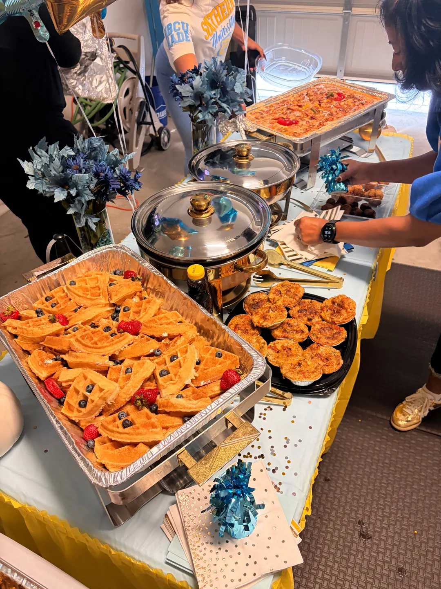
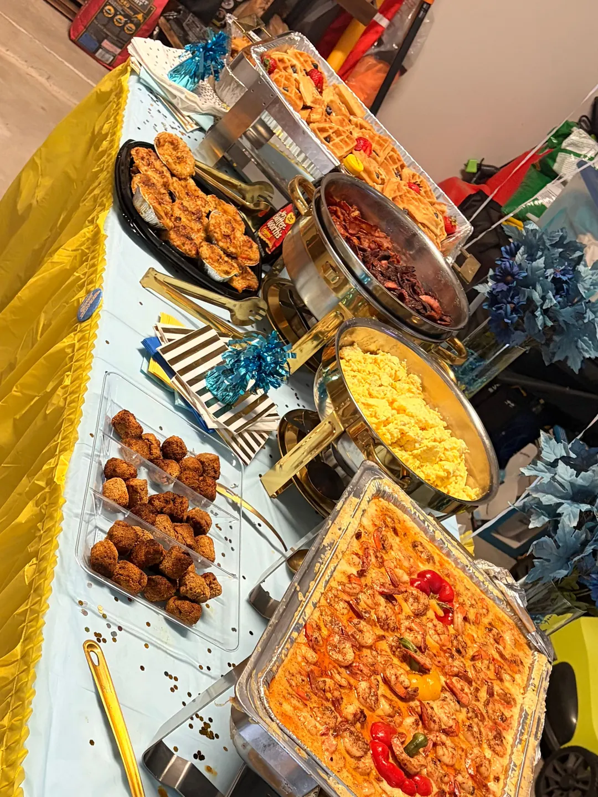

Texas Southern vs. Southern University is the kind of game people plan a whole day around, and we were glad to cater a game-day brunch for it. Houston’s own TSU Tigers and the Southern University Jaguars from Baton Rouge are SWAC rivals, and a matchup like that calls for a real spread.
Here is what we served, how the table came together and what to think about if you are planning brunch catering for your own watch party, tailgate, homecoming or alumni get-together in Houston.
What was on the brunch table
Brunch for a crowd needs a little sweet, a lot of savory and dishes that hold up in a chafing dish while guests come back for seconds. This menu covered all three:
- Creole shrimp and grits: seasoned shrimp in our Creole cream sauce over creamy grits, finished with sweet peppers and served from a full chafing pan.
- Waffles with fresh berries: a full tray of golden waffles topped with strawberries and blueberries, with syrup on the side.
- Scrambled eggs and bacon: the breakfast basics, held warm in gold-trimmed chafing dishes.
- Finger foods for grazing: a platter of golden baked bites and a tray of crispy fried bites that guests could grab between plates.


Dressed in blue and gold
The party leaned all the way into Southern’s Columbia blue and gold: blue and yellow table covers, blue floral centerpieces, gold confetti, SU plates and a stuffed Jaguar keeping watch over a football tub of napkin-wrapped utensils. Gold-trimmed chafing dishes and serving tongs tied the food right into the theme.


Cheering for TSU in maroon and gray instead? Tell us. We are happy to cater for either side of the rivalry.
Why brunch works for a game-day crowd
- It fits the clock. A morning watch party or pre-game gathering lines up naturally with breakfast food, and brunch keeps guests fed through a long afternoon.
- It holds well. Shrimp and grits, eggs and bacon stay warm in chafing dishes, so guests can eat on their own schedule.
- It pleases a mixed crowd. Sweet waffles and berries sit next to savory Creole dishes, so kids, alumni and grandparents all find something.
- It scales. Trays and full pans make it simple to size the menu to your guest count.
Planning your own game-day brunch
When you request a catering quote, it helps to share:
- Your date, guest count and the time you want the food ready, especially if the party is built around kickoff.
- Your location. We cater across Houston, Southwest Houston, Manvel, Pearland, Missouri City and Sugar Land.
- Whether you want drop-off or on-site setup.
- The dishes you have in mind from our full menu or breakfast menu, plus any dietary restrictions or allergies. Pork is used in our kitchen.
Larger orders generally need at least one day’s notice, and full-service events should reach out further ahead. For more ideas, see our Cajun catering menu ideas for 10, 25 or 50 guests or read how we approach private event catering in Houston.
Ready to feed your game-day crowd? Get a catering quote or call (832) 992-7335.